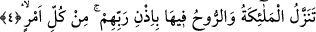

erdiğini ve Kadir gecesinin sâdece bir kez yaşandığını ileri sürmüşlerdir, ancak
çoğunluğu oluşturan âlimlere göre Kadir gecesi kıyamete kadar bakidir ve Allah’tan bir
fazilet, kullarına bir rahmet olarak her yıl tekrar tekrar gelmektedir.
Kadir gecesi bazı âlimlere göre sâdece Ramazana has bir gece değildir. Bu görüş
İmam-ı Azam Ebû Hanife’nin ve Şeyh-i Ekber (k.s.) hazretlerinin görüşüdür. Kadir
gecesinin sâdece Ramazanda olmayıp senenin herhangi bir gecesinde olduğunu İmam-ı
Azam’ın şu ifâdesi bize yansıtmaktadır. Herhangi bir kimse karısına “sen kadir gecesi
gelince boş ol”, veya kölesine; “sen kadir gecesi gelince azad ol” dese kadının boş
olduğuna, kölenin azad olduğuna; ancak bir yıl tamam olup bitince hükmedilebilir. Bu
da yukarda işâret ettiğimiz üzere kadir gecesinin bir yılın herhangi bir gecesinde gizli
olduğunu gösterir. Ancak âlimlerin ekserisine göre kadir gecesi Ramazan ayındadır.
Peygamber Efendimiz (s.a.) Ramazan ayının son on günü girdiğinde yaptığı amellerini
arttırır, geceleri ihyâ eder, âile fertlerini ibâdet etmeleri için gece uykudan kaldırırdı.
[181] Salih kimseler Ramazanın son on gecesinde kadir gecesi namazı niyetiyle iki rek’at
namaz kılarlardı.
Büyüklerden birisi şöyle diyor: “Kim senenin her gecesi kadir gecesini ihyâ niyetiyle
on âyet okursa kadir gecesinin bereketinden ve sevabından mahrum kalmaz”
İmam Ebul-Leys (rh.) der ki: Kadir gecesi namazının en azı iki, en çoğu bin, ortası
yüz rek’attır. Ortası şöyle kılınır: Her rek’atta Fatiha sonra bir kez Kadr sûresi, üç kez
de İhlas sûresi okunur. Her iki rek’atta bir selam verilir. Selam’dan sonra Peygamber
(s.a.) Efendimiz’e salat u selam getirilir. Böylece namaza devam edilerek yüz veya daha
az ya da daha çok kılınır. Bu gecenin namazının faziletini göstermeye Allah’ın Kadir
gecesinin değerini ifâde buyurduğu şu âyetlerle Peygamber Efendimiz’in (s.a.) bu
gecede kılınan namazın faziletine dâir vermiş olduğu haber yeter. Nafile namaz cemaatle
mekruh olmaksızın kılınabilir. Müslümanlar ezan okuyup kamet getirmeksizin nafile
namazı cemaatle kılabilirler. Bunu bir çok âlim ifâde etmiştir. en-Nukaye şerhinde ve
başka kitaplarda bu fetva açıkça yazılıdır.
el-Muhiyt’ta deniyor ki: Kadir gecesi namazı, Regaib gecesi namazı, Berat gecesi
namazı vb. nafile namazlar kılarken mutlak olarak bir imama uyup onun arkasında
cemaatle kılmak mekruh değildir. Çünkü mü’minlerin güzel gördükleri Allah katında da
güzeldir. Bunları kınayan ve bu zevkten mahrum olan kimselerin görüşlerine iltifat etme.
Çünkü onlar iktidarsız kimse mesâbesindedirler. Münacatın zevkini, itâatın tadını ve
vakitlerin faziletini anlamazlar.
Gülün cilvesindeki mânâları herkes anlayamaz
Açıklaması hiçbir defterde yazmaz, onu bülbülden dinle.